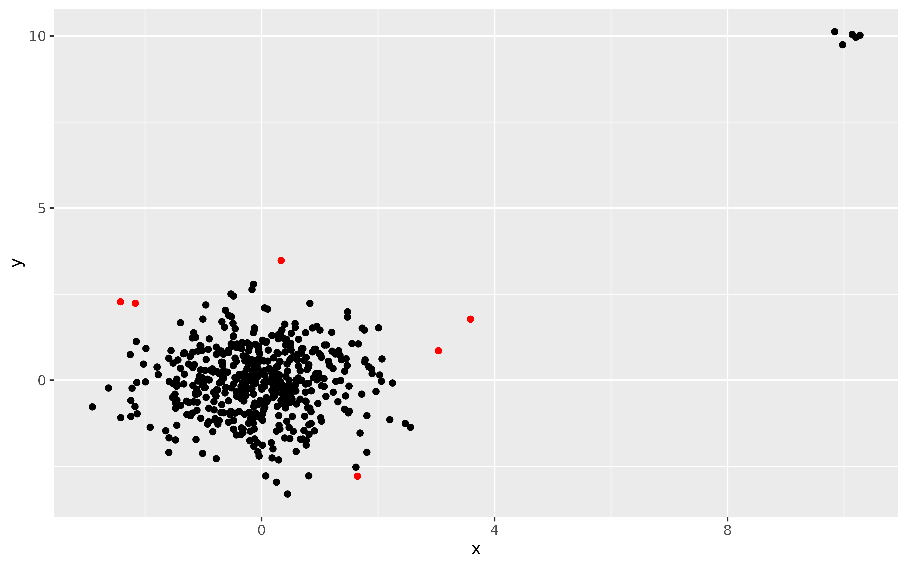

This function identifies outliers using the algorithm lookout, an outlier detection method that uses leave-one-out kernel density estimates and generalized Pareto distributions to find outliers.
Usage
lookout(
X,
alpha = 0.01,
beta = 0.9,
gamma = 0.97,
bw = NULL,
gpd = NULL,
scale = TRUE,
fast = NROW(X) > 1000,
old_version = FALSE
)Arguments
- X
The numerical input data in a data.frame, matrix or tibble format.
- alpha
The level of significance. Default is
0.01. So there is a 1/100 chance of any point being falsely classified as an outlier.- beta
The quantile threshold used in the GPD estimation. Default is
0.90. To ensure there is enough data available, values greater than 0.90 are set to 0.90.- gamma
Parameter for bandwidth calculation giving the quantile of the Rips death radii to use for the bandwidth. Default is
0.97. Ignored under the old version; where the lower limit of the maximum Rips death radii difference is used. Also ignored ifbwis provided.- bw
Bandwidth parameter. If
NULL(default), the bandwidth is found using Persistent Homology.- gpd
Generalized Pareto distribution parameters. If
NULL(the default), these are estimated from the data.- scale
If
TRUE, the data is standardized. Using the old version, unit scaling is applied so that each column is in the range[0,1]. Under the new version, robust rotation and scaling is used so that the columns are approximately uncorrelated with unit variance. Default isTRUE.- fast
If
TRUE(default), makes the computation faster by sub-setting the data for the bandwidth calculation.- old_version
Logical indicator of which version of the algorithm to use. Default is FALSE, meaning the newer version is used.
Value
A list with the following components:
outliersThe set of outliers.
outlier_probabilityThe GPD probability of the data.
outlier_scoresThe outlier scores of the data.
bandwidthThe bandwdith selected using persistent homology.
kdeThe kernel density estimate values.
lookdeThe leave-one-out kde values.
gpdThe fitted GPD parameters.
Examples
X <- rbind(
data.frame(
x = rnorm(500),
y = rnorm(500)
),
data.frame(
x = rnorm(5, mean = 10, sd = 0.2),
y = rnorm(5, mean = 10, sd = 0.2)
)
)
lo <- lookout(X)
lo
#> Leave-out-out KDE outliers using lookout algorithm
#>
#> Call: lookout(X = X)
#>
#> Outliers Probability
#> 1 46 0.0073368293
#> 2 49 0.0085163698
#> 3 101 0.0008307947
#> 4 209 0.0008307947
#> 5 216 0.0045074419
#> 6 294 0.0000000000
#> 7 306 0.0000000000
#> 8 325 0.0075412068
#> 9 347 0.0070912333
#> 10 468 0.0000000000
#>
autoplot(lo)
